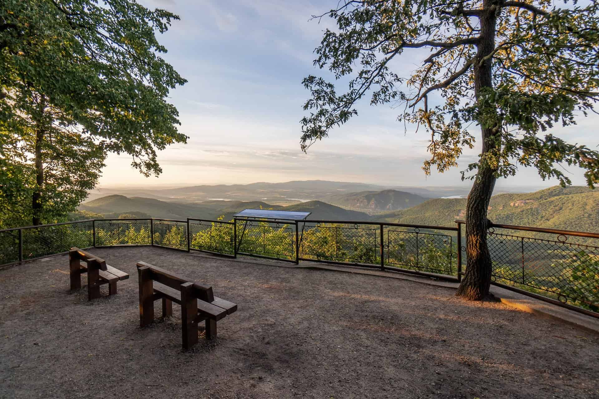
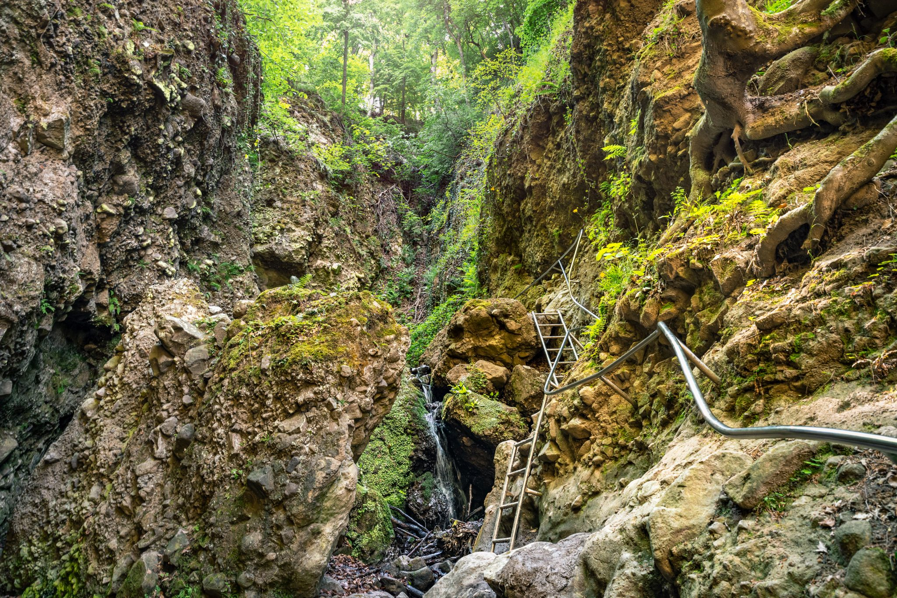
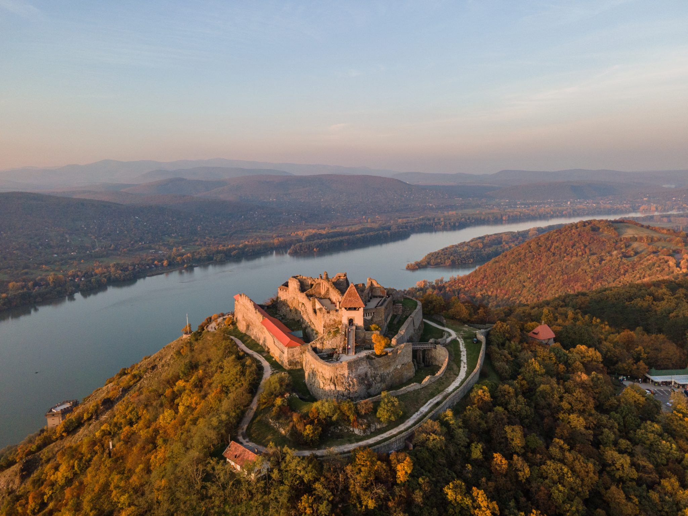

A Pilis gyöngyszemei
Dobogókő
Dobogókő a Visegrádi-hegység legmagasabb csúcsa, tengerszint feletti magassága 700 méter. A hely a 19. század végén vált népszerű úticéllá, amikor Dr. Téry Ödön és Dr. Thirring Gusztáv vezetésével a frissen alakult Magyar Turista Egyesület elkezdte a környék bejárását és a túraútvonalak kijelölését. Az egyesület célul tűzte ki a túrázás magyarországi népszerűsítését, és azért esett Dobogókőre a választásuk, mert a változatos erdei utak mellett gyönyörű panoráma tárul a kirándulók elé minden évszakban, továbbá a kirándulóhely Budapestről egyszerűen és gyorsan megközelíthető. Dobogókőn épült az ország egyik első menedékháza, a Báró Eötvös Loránd Menedékház, amelyet Pfinn József tervei alapján 1898-ban adtak át. A menedékház faépületében ma a Turistamúzeum működik, míg a mellette 1906-ban felépült kőépület ma is turistaházként szolgál. Dobogókőn minden évszakban pár fokkal hűvösebb van, mint a magyarországi átlag hőmérséklet, így a klíma nyáron roppant kellemes, télen pedig gyakran megmarad a hó, amely alkalmas téli sportokhoz.
VisszaRám-szakadék
A Rám szakadék kétség kívül Magyarország egyik legismertebb és legszebb túraútvonala. A részben szurdoktúra egy igazán izgalmas, egész vagy félnapos kirándulást tartogat. A vadregényes vidéken létrákkal juthatunk fel egyre beljebb a szurdokba, ahol azt elhagyva utunk egy meseszép erdőben folytatódik. Hab a tortán, hogy a szurdokot nagyjából 1 - 1,5 órás autóúttal elérhető Budapestről! A szakadék egy vulkáni eredetű szurdokvölgy, hiszen az a Visegrádi-hegységben fekszik. A meredek, már már mesébe illő falakkal bekerített szurdokban zúgók és vízesések alakultak ki. A Rám-szakadék Magyarország egyik legközkedveltebb kirándulóhelye egyedülálló természeti szépsége okán. Az észak-dél irányú szurdokvölgyet néhol akár 35 méter magas sziklafalak veszik körbe, a szélessége pedig helyenként akár 3-4 méterre is leszűkül. A meredek falú völgyben az év szinte minden napján találhatsz csobogó vizet a lábad alatt, melyen a túra során többször is át kell kelned. Akár egyedül, de barátokkal vagy családdal is érdemes felkeresned a Rám-szakadékot, mivel valamennyi korosztály nagy örömét leli a túrában és a látványos sziklafalakban.
VisszaVisegrádi Fellegvár
A ma látogatható Fellegvár nem az első vár, amely itt épült. Az első vár a Sibrik-dombon, az egykori római
tábor alapjaira épült, és a tatárjárás során pusztult el. A visegrádi kettős várrendszert 1250-1260 körül
építette IV. Béla király és felesége, Laszkarisz Mária királyné, a királynő hozományából. A vár a
hegycsúcsot övező erődítésfalakból, két toronyból és egy lakópalotából állt. A későbbi korokban a fővárost
ide helyező Károly Róbert király bővítette a várat, s itt került sor az 1335-ös híres királytalálkozóra is.
A várat Luxemburgi Zsigmond idején tovább korszerűsítették, vélhetően ekkor készült el az úgynevezett
“asszonyház” is.
A Fellegvárat az Alsóvárral völgyzárófal kötötte össze, amely egésze a Duna partjáig tartott, majd ott
őrtoronyban végződött. A völgyzárófalakon vezetett az a középkori, Esztergomból Budáig tartó út, amit
északon a kaputorony, délen pedig egy kapu zárt le.
Mátyás király uralkodása idején a vár palotaszárnyait teljesen felújították. A várban az évszázadok során
több alkalommal is őrizték a szent koronát a koronázási ékszerekkel, sőt egy rablási történet is fűződik
Visegrádhoz: 1440-ben Erzsébet királyné megbízásából az egyik udvarhölgye, Kottaner Jánosné innen rabolta el
a szent koronát. Visegrád koronaőrző hely volt 1529-ig. A török időkben a vár óriási pusztítást szenvedett
el, majd 1544-ben török kézre került. Ez után felváltva volt a török és a magyar csapatoké, míg legvégül a
törökök, miután katonai célra már teljesen alkalmatlanná vált, elhagyták a szinte teljesen elpusztult
várat. Nemcsak a vár, hanem a város is elpusztult, újranépesedése hosszú időt vett igénybe. A vár
helyreállítására az első törekvések az 1870-es évek elején történtek, s még napjainkban is tartanak.
Érdekesség, hogy Fellegvárhoz is vezető, az ország legszebb panoráma autóútjának nyomvonalterve Szabó Károly
és Luttonszky Zoltán tervező erdőmérnökök rajzasztalán született meg.
Vissza